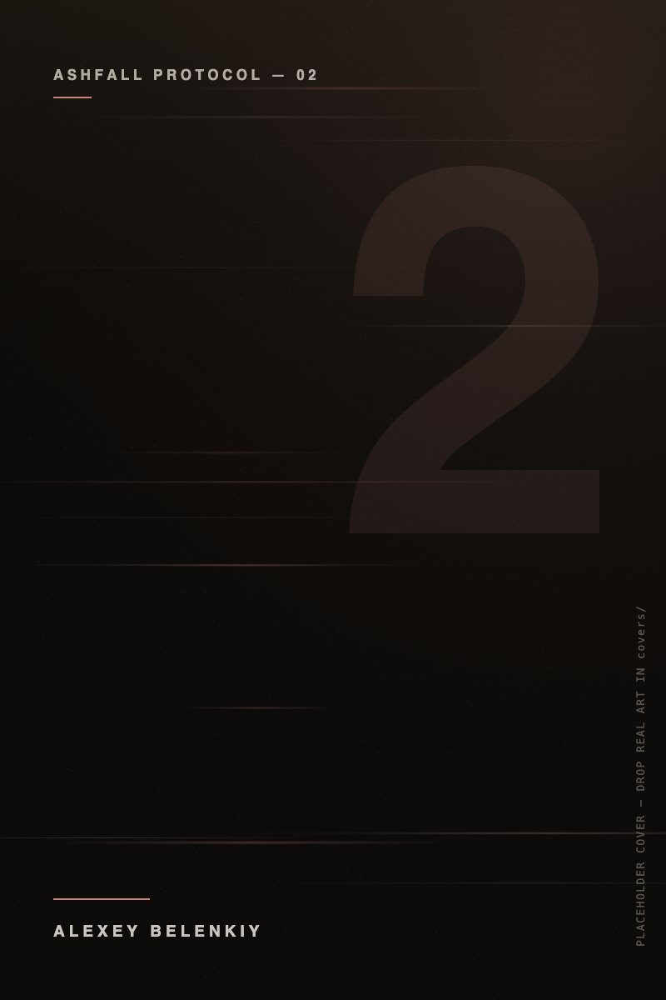

La Chute du temps
Le passé est une arme chargée.
Alexeï Belenkiy
Le passé est une arme chargée.

Chaque correction laisse une cicatrice.

Tu es la neuvième tentative de toi-même.

Le signal n'a jamais demandé la permission.

Certains mots sont programmés pour suppression.

Le ciel se souvient d'une autre fin.